Follow-up of computer
drawing & etching render. There the camera was given: one
pinhole, one flat image. Here the camera is the subject.
School perspective has 1, 2 or 3 vanishing points. Those are not
three systems. It is one system, the pinhole on a plane, seen from
three angles. The real choices are elsewhere: the shape of the
sheet, the shape of the eye, the shape of the rays.
Next to most pictures, a small outside view: the same scene
seen from elsewhere, with the camera in it. Red dot = the eye,
black = the sheet, red lines = some of its rays, up to what they hit.
Pale red where hidden behind a box.
Every picture below is the same scene: a street of boxes, a grid
on the ground every 2 units, a tower at the end. Only the camera
changes. Ray-traced, flat grey per face, black edges.
0. What is a camera
A camera is a function: pixel → ray. Each point of
the sheet looks along one line of space and gets the colour of the
first thing it hits. That's all.
Yu, McMillan & Sturm (2008) cut it in two steps:
which rays: a family of lines in space. Mathematicians
call a 2-parameter family of lines a congruence (Kummer,
1860s). Two parameters because the sheet is 2D.
how they are laid out on the sheet: which ray goes to
which pixel.
The pinhole: all rays through one point (step 1), cut by a plane
(step 2). Change step 2 only → curvilinear perspective,
panoramas, fisheye. Change step 1 → the eye stops being a
point. Change the lines themselves into curves → Gröller's
nonlinear ray tracing.
One useful property: order one. Through a generic point of
space passes exactly one ray. Then each thing in the scene appears
once, and only once. All the cameras of sections 1–3 are
order one. Break it and objects appear twice or vanish.
1. One point, a plane
The number of vanishing points = the number of axes of the boxes
that are not parallel to the picture plane. Each family of
parallel edges converges to the point where the ray parallel to it
pierces the plane. Parallel to the plane → no piercing, the
edges stay parallel.
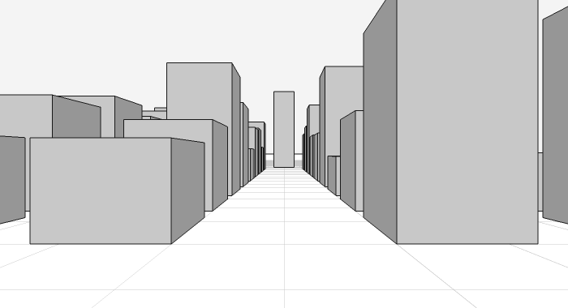
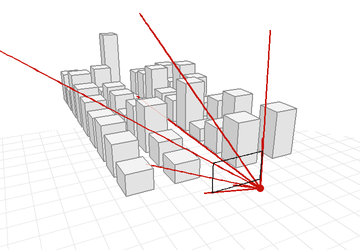
1 point. The plane faces the street. Only z converges (to the tower). Verticals and horizontals stay parallel.
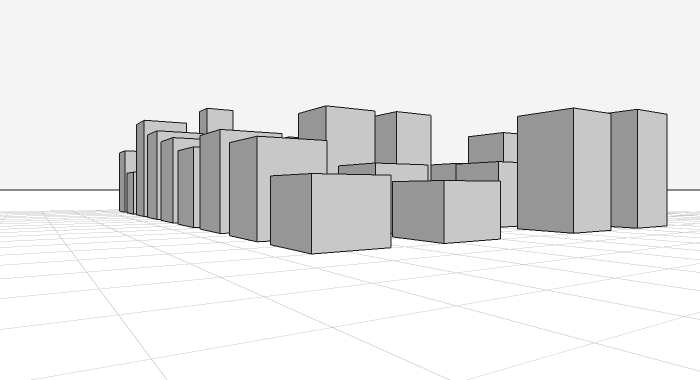
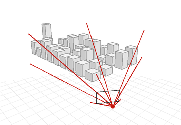
2 points. The eye turns 33°. x and z converge, left and right, on the horizon. Verticals still vertical: the plane is still vertical.
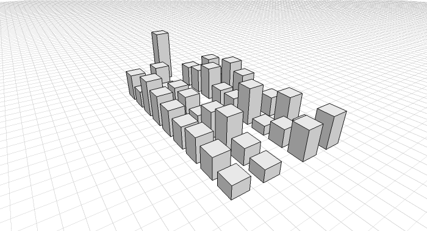
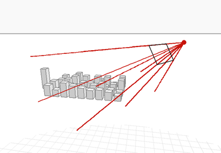
3 points. The eye also looks down 30°. The verticals now converge too, far below the frame.
Same eye, same rays. The three images are crops of the same
sphere of directions, by planes that turn. Hence no «
4-point perspective » with a plane: a box has 3 axes.
The price of the plane: it cannot hold more than 180°, and
long before that the edges stretch. Distortion of wide angle is
not a lens defect, it is the plane.
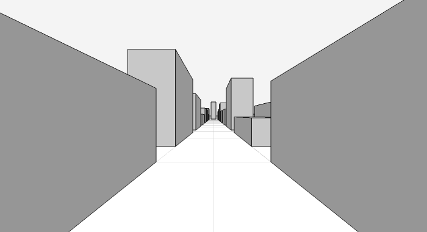
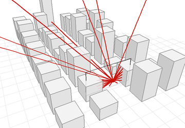
Pinhole, plane, 150° across. Correct, and unreadable. The near boxes are smeared to the borders.
2. One point, a curved sheet
Keep the point. Bend the sheet around it. Rays are the same, only
the layout changes. Straight lines of the scene become curves on
the sheet: a line + the eye = a plane, and a plane cuts a
cylinder or a sphere along a curve.
Cylinder
The sheet is a vertical cylinder around the eye, then unrolled.
Verticals stay straight (they are parallel to the axis), horizontals
bend into sine-like arcs. Field of view without limit across. The
19th c. panoramas (rotundas), the phone panorama mode.
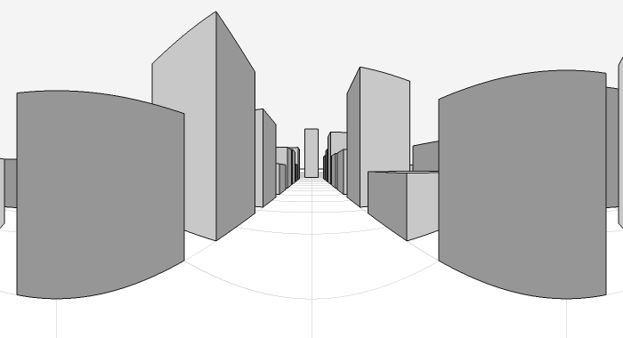
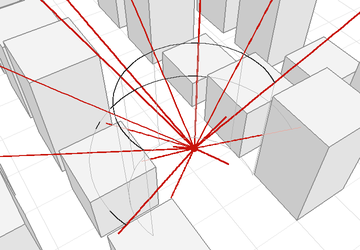
Cylinder, 220° across. The street still goes to the centre, the side boxes bend. Each horizontal edge has two vanishing points, at ±90° of it: a sine. Outside: the cylinder sheet around the eye, 220° of it, rays in red.
Sphere: curvilinear perspective
The sheet is a sphere, flattened by some map. Here equidistant
fisheye: distance from the centre = angle from the axis. All
straight lines become arcs (approximately circles). Flocon &
Barre, La Perspective curviligne (1968), worked the whole
thing out as a drawing method, with grids. Escher drew it by hand
before them: House of Stairs (1951), High and Low
(1947). Flocon wrote to Escher in 1959, long correspondence.
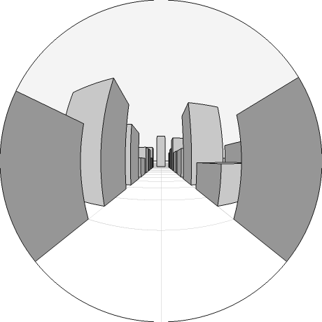
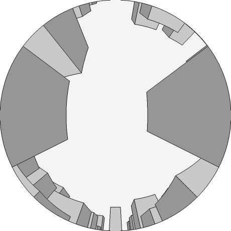
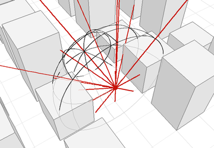
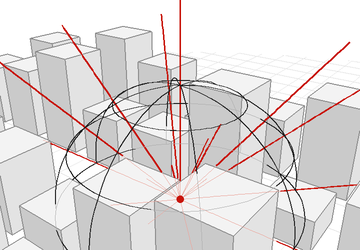
Fisheye 180°. Left: down the street. Right: from the middle of the street, looking straight up. Every vertical goes to the centre (the zenith), the street runs across. Below, outside: the sheet is a hemisphere in front of the eye, then turned to the sky. Angle from the axis = distance from the centre of the disc.
Count the vanishing points. Each family of parallels converges
to 2 points on the sphere, opposite. 3 axes → 6 points. A
hemisphere shows up to 5 of them: 5-point perspective. The full
sphere: 6-point, and then the flat map has to tear somewhere.
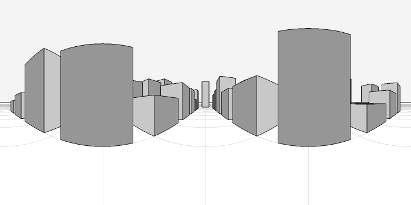
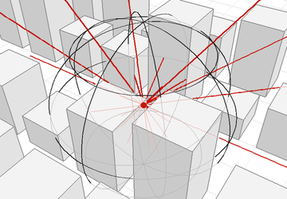
Full sphere, equirectangular map (longitude × latitude), the format of 360° photos. From the middle of the street. The street converges twice: to the tower in the centre, and behind, at both edges of the image. Outside: the sheet is the whole sphere, rays leave in every direction, front and back.
Note: a curved sheet changes nothing to what is seen, only to how
it is laid out. Re-project a 360° photo and you get any of the
above. Different eye positions cannot be recovered that way.
3. The eye is not a point
Now change the rays. The pinhole is the case where the whole
congruence passes through one point. Other choices: the point at
infinity, a line, two lines, a point behind the scene, a surface.
The point at infinity: parallel projection
All rays parallel. No vanishing point, no foreshortening by
distance: a box at the end of the street is the same size as a
box at the front. Engineers (axonometry, isometric), early video
games, and a long tradition in East Asian painting: Chinese
handscrolls, the Japanese fukinuki yatai (« blown-off
roof ») of the Genji scrolls, oblique projection, the
viewer floating above.
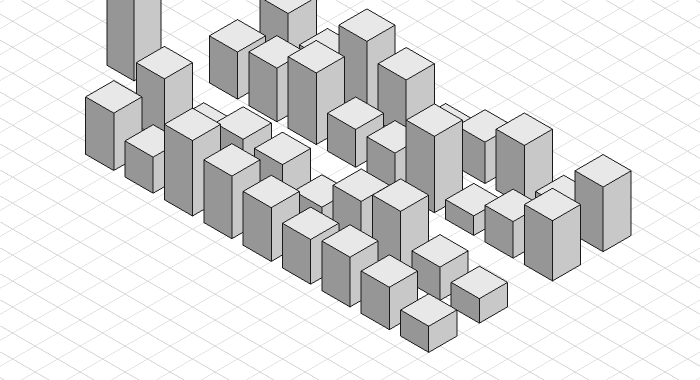
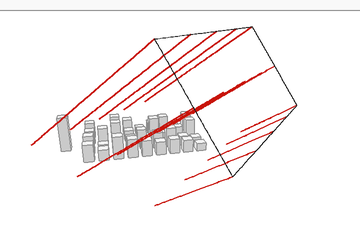
Isometric: rays parallel, perpendicular to the sheet, along the diagonal of the cube. The three axes at 120°. The tower is cut by the frame. Outside: no eye, a rectangle of origins. All rays parallel and perpendicular to it.
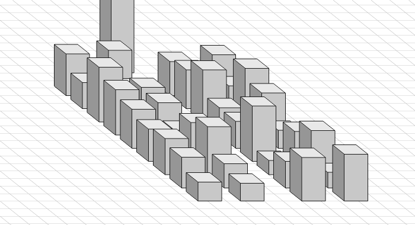
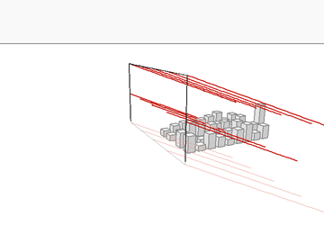
Oblique (cavalière): rays parallel but slanted to the sheet. Front faces stay true shape, depth recedes at an angle. The scroll painter's projection. Outside: same rectangle, rays still parallel but slanted to the sheet.
A parallel projection can be read as the eye very far away with a
very long lens. Or as an eye that is everywhere at once, a plane
of eyes. The second reading is the useful one for what follows.
A line: pushbroom
The eye slides along a line and keeps only one column at each
position. Along the line: parallel projection. Across: perspective.
It is the strip camera: the photo-finish at the race track, the
satellite scanners (linear CCD on an orbit), Ed Ruscha's Every
Building on the Sunset Strip (1966) is close to it.
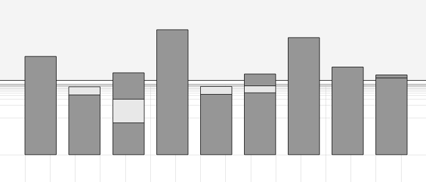
Pushbroom: the eye walks the street (34 units), looks to the right. All facades the same width, whatever their distance. The side faces of the boxes are never seen: the rays are parallel to them. Vertically, normal perspective: the second row, further, is shorter.
Two lines: crossed slits
Take a vertical slit and a horizontal slit, at different
distances. The rays are the lines that go through both. Two
perspectives in one image: horizontally the eye is at the first
slit, vertically at the second. The proportions of a box depend
on its distance. Zomet, Feldman, Peleg & Weinshall (2003)
built such images by mosaicking video from a moving camera.
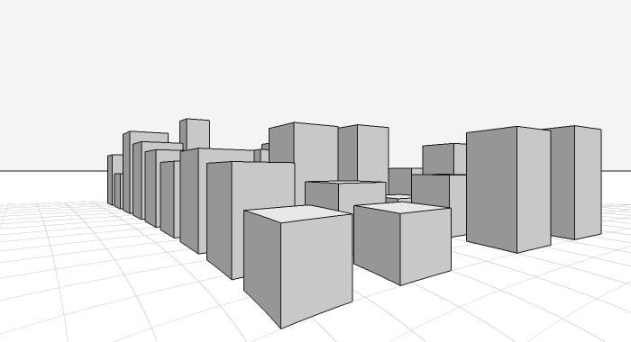
Crossed slits. Same pose as the 2-point image. Vertical slit at the eye, horizontal slit 6 units in front. Near boxes stretched up, far ones squashed. The ground grid lines are not straight any more: in this camera, straight lines become conics.
Yu & McMillan, General Linear Cameras (2004): take
any three rays, the set of their linear combinations is a
camera. Exactly 8 kinds come out: pinhole, orthographic,
pushbroom, crossed slits, pencil, twisted orthographic, bilinear,
and the epipolar plane (degenerate). The pinhole is not the
centre of anything, it is one corner of the list.
A point behind the scene: reverse perspective
The rays start on a plane of eyes and converge on a point
beyond the scene. Same lines as a pinhole placed back
there, only the direction of sight is reversed. The far is
bigger than the near; the street widens. Byzantine and Russian
icons (Florensky, Reverse perspective, 1920): tables seen
from above with their far edge longer, books open toward the
viewer.
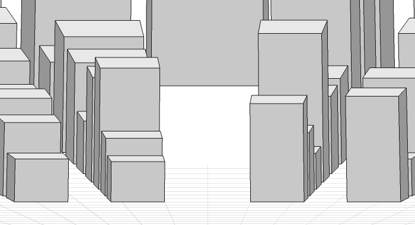
Reverse perspective. Rays converge 90 units ahead, beyond the tower. The street opens instead of closing, the tower at the end is the biggest thing in the image. Both sides of each box visible.
A surface: rays normal to a cylinder
The sheet is a cylinder around the scene, and each point
of it looks along its normal, inward. A ring of eyes. The object
is seen from all sides at once, unrolled. Rollout photography
does exactly this: the vase turns on a table in front of a slit
camera (Justin Kerr's rollouts of Maya vases).
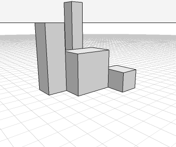
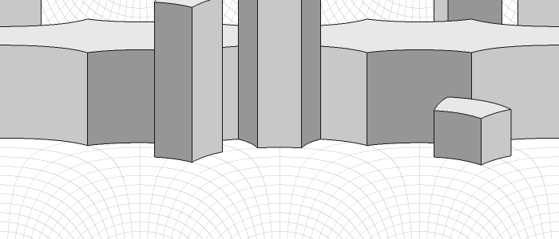
Above: a group of 4 boxes, ordinary pinhole. Below: rays normal to a cylinder of radius 14 around them, slightly tilted down (so in fact normals of a cone). 360° across. The big box shows its 4 faces in a row; the tall thin one twice its sides.
Note: the pushbroom above is the same kind of family. Rays that
cross a line at right angle = normals of a cylinder whose axis is
the line. Pushbroom: the eye on the axis, looking out. Rollout:
the eye on the cylinder, looking in.
4. Bent rays
Last step: the rays are not straight lines. Gröller,
Nonlinear Ray Tracing: Visualizing Strange Worlds (1995):
the ray is the trajectory of a particle in a force field, or a
curve given by a differential equation. March it in small
straight steps, test each step against the scene.
Not only a game. Light really bends: mirages (hot air, gradient
of refractive index), gravitational lenses, the black hole of
Interstellar (James et al. 2015). The eye always assumes
straight rays, hence the illusion.
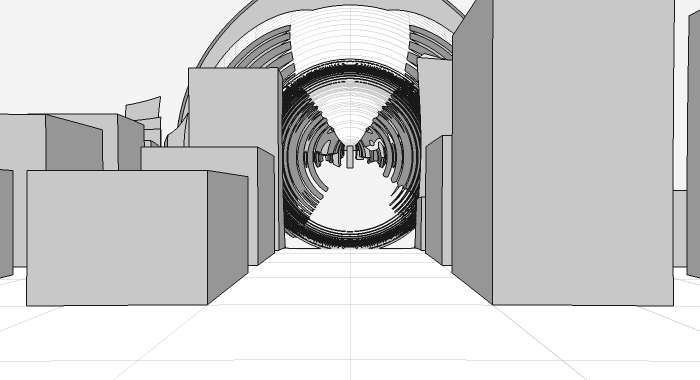
A point mass floating above the street, 18 units ahead. Rays pulled toward it, 1/r². The end of the street is seen inside a disc, surrounded by rings: rays that went round the mass once, twice, each ring a copy of the city. Near the edge of the disc the rays are chaotic, hence the noise.
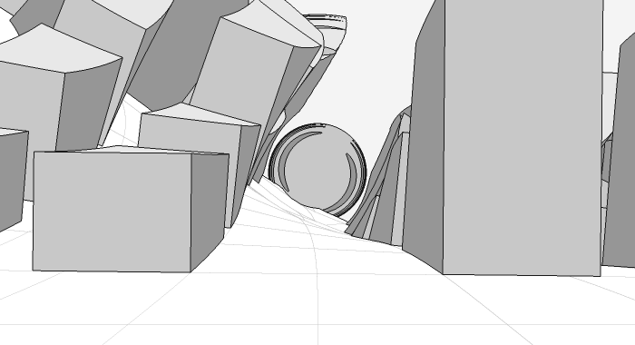
Twist: the direction of each ray turns around the axis of the street, faster and faster with depth. The street bends away and rolls over; at its end, rays that spiraled into the ground make a small disc.
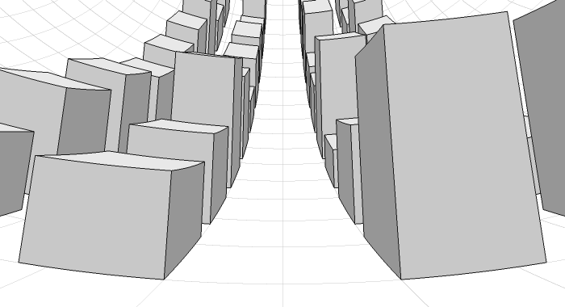
Falling rays: each ray is pulled downward, at constant speed, like a thrown stone (close to parabolas for flat rays). Eye tilted up 12°. The ground rises like the inside of a bowl and the horizon disappears: the far end of the street climbs to the top of the frame. The opposite of a small planet. Superior mirages (looming) do a mild version of this.
Bent rays break order one easily: two rays reach the same point,
a thing appears twice (the lens). Or no ray reaches a region:
blind spots.
Falling rays, in detail
The rule: at each step the direction is pulled down by
g, then renormalised (speed 1). So the turning rate is
g cos θ, θ the angle above the
horizontal. In optics that is a refractive index decreasing with
height, n ∝ e−g y: denser
below. The real atmosphere does exactly this, weakly.
Two facts make it simple. The pull is vertical, so each ray stays
in its vertical plane. And the angle drops linearly with the
horizontal distance ρ:
θ = θ0 − gρ →
y(ρ) = ln( cos θ / cos θ0 ) / g
Every ray ends up going down, none comes back up. At a given
distance, a steeper ray is always higher: each point of space is
reached by exactly one ray from the eye. Order one, no doubles,
no holes. Here g = 0.035: a ray turns 2° per unit,
90° in 45 units.
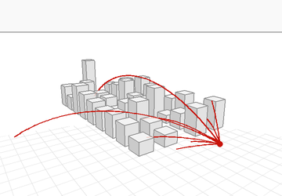
Outside view. The same 9 rays as the corners and middles of the picture, curved. The upper ones arc over the street and land on the far boxes or the ground: that is why the far end of the street shows at the top of the picture.
The same picture by morphing the world
Yes, it can. Take each point of the world, find the ray from the
eye that reaches it, its initial direction d0
and the length s travelled. Move the point to
eye + sd0. In the morphed world,
straight rays hit the same things, in the same order, at the same
distances: same picture, same occlusions.
In differential geometry this map has a name: the exponential
map at the eye, the curved rays read as geodesics and
straightened into normal coordinates. Here both ways have
closed forms (inverse: θ = atan(sinh(asinh(tan θ0) − g s))),
so the morphed world can be ray-traced directly.
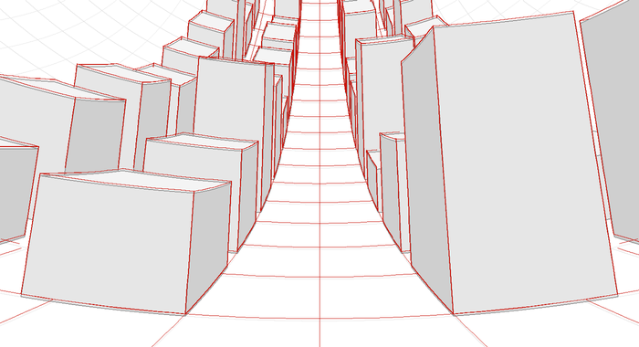
Check. Grey: the falling-rays picture (curved rays, flat world). Red: the morphed world, edges and ground grid, drawn by an ordinary pinhole with straight rays, hidden lines removed. They coincide.
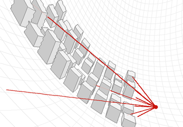
The morphed world, from the side, from inside the bowl (ray-traced through the inverse morph). Ground lifted into a bowl: 40 units ahead of the eye it is 28 units up. Boxes lean outward and stretch. Red: the same 9 rays, now straight, same length.
For flat rays (small angles) the morph is just a lift:
y′ = y + gρ²/2. A paraboloid
bowl. The other sign, rays curving up (hot road, inferior
mirage): the world drops by gρ²/2, a small planet
of radius 1/g.
Limits of the trick:
One eye only. The morph depends on the eye. Move the
eye, compute another morph. Bent rays are a property of the
space, the morph a property of the viewpoint. (Video-game
« curved world » shaders do this: bend the geometry
by distance to the camera, each frame.)
Order one needed. The lens above cannot be morphed:
a point seen twice would have to be in two places.
Light and shadows come from other eyes (the sun):
they need their own morph. In one morphed world, shadows are
wrong.
The trade goes both ways in graphics. Barr (1986) ray-traced
deformed objects by doing the opposite: keep the object flat,
bend the rays.
The Earth, a bowl a little
Air is denser below, so light bends down: the real falling rays,
very weak. Surveyors correct for it with a coefficient
k: the line of sight is a curve of radius R/k,
and everything works as straight rays on an Earth of radius
R/(1 − k). A morph, exactly as above:
the lift gρ²/2 partly cancels the drop of the
curved Earth. On average the optical Earth is about 15 % less
curved than the real one.
Strong inversion (cold air on cold sea, warm air above): the
rays bend as much as the Earth, the sea looks flat, distant
coasts are lifted into view (looming), stretched (towering),
stacked (Fata Morgana). Rowbotham's Bedford Level experiment
(1838) « proved » a flat Earth this way: a gradient of
about 0.11 °C per metre is enough to make the canal look
flat. Strong enough and the rays bend more than the Earth: the
ground rises like the bowl above.
The other way to leave the single point: no single camera at all,
but patches from several cameras, glued along seams. The usual way
painters do it, mostly without saying so.
Chinese handscroll: the viewpoint moves with the
scroll. No single place to stand.
Cézanne: the table edge at two heights on each side
of the cloth. Cubism: several views of the same object
side by side.
Hockney's joiners (Pearblossom Hwy., 1986):
hundreds of photos, each its own pinhole, assembled by
hand.
Escher, Other World (1947), Relativity
(1953): several consistent pinholes in one frame, so that
up/down depends on where you look.
Cel animation backgrounds: Wood et al. (1997),
Multiperspective panoramas: one long painted background
that, cropped by a sliding window, looks like a camera moving
through 3D.
Not a congruence any more. A map: each region of the sheet with
its own camera, continuity only along the seams.
6. Rays as normals
The idea from the draft: put the eye on a surface, each point
looking along its normal. The sensor is a surface, not a point.
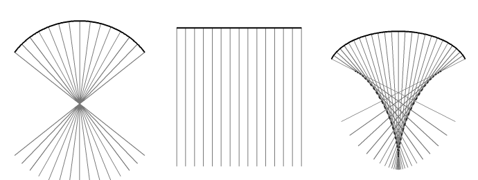
Normals of a curve. Circle → all through the centre: the pinhole. Line → parallel: orthographic. Ellipse → no common point; the normals touch an envelope (dashed), the caustic. Its cusp is where they bunch most.
So the « gradient field » version: a function
φ on space, the sensor is a level set, the rays are the
lines of ∇φ. Sphere → pinhole, plane →
orthographic, cylinder → pushbroom / rollout. Any other
surface: a new camera.
The literature search in the draft found no paper on it as a
camera model. But optics has had it since 1808–1830:
rays are orthogonal to the wavefronts (in a uniform
medium): the rays are the normals of a surface. Hamilton,
eikonal: rays = gradient of the optical path length. A sensor
surface = a wavefront run backwards.
Malus–Dupin theorem: a family of rays normal to a
surface stays normal to some surface after any number of
reflections and refractions.
the « eye » of such a family is not a point: each
ray touches the envelope in 2 focal points (the 2
centres of curvature of the surface). All together: 2 focal
surfaces, the caustic. A pinhole is the case where both collapse
to one point.
That gives the general answer to the title question: the eye of a
camera is its focal set. Pinhole: one point. Orthographic:
at infinity. Pushbroom: a line (and infinity). Crossed slits: two
lines. A general surface: two surfaces.
Not every camera is a family of normals. For normals of a surface,
the two focal planes through each ray are perpendicular (they are
the principal directions). For crossed slits with direction
(p, q, 1) the two planes have normals (−1, 0, p) and
(0, 1, −q): dot product −pq, not zero. No surface is
orthogonal to the crossed-slit rays. Same for the twisted and
bilinear cameras of the GLC list. Normal families are a subclass,
the « wavefront » cameras.
To check: whether this is written down as such somewhere (Ponce
2009? line geometry books on normal congruences). Probably yes,
under another name.
7. Table
camera
rays
« eye »
sheet
where
1, 2, 3 points
through a point
point
plane
Alberti, photography
panorama
through a point
point
cylinder
rotundas, phone
curvilinear, fisheye
through a point
point
sphere
Flocon & Barre, Escher
360°
through a point
point
sphere, unrolled
360 photos
axonometric
parallel
at infinity
plane
engineers, games
oblique
parallel, slanted
at infinity
plane
handscrolls, Genji
pushbroom
cross a line at 90°
line
plane
photo finish, satellites
rollout
normals of a cylinder
axis
cylinder
Maya vases (Kerr)
crossed slits
meet two lines
2 lines
plane
Zomet et al.
reverse
through a point beyond
point, behind
plane
icons
normals of S
∇φ
2 focal surfaces
S
wavefronts, caustics
bent rays
curves
—
any
Gröller, mirages, black holes
collage
by patches
many
any
Cézanne, Hockney, Cubism
8. Art references
Painters met the problem long before the ray tracers. Notes by topic,
tied to the sections above.
Brunelleschi,
Florence, c. 1415–20. Painted the Baptistery on a small panel,
drilled a hole in it, looked through from the back at its reflection
in a mirror. Known from Manetti's later account; the panel is lost.
The first eye that is a point, literally: a hole.
Alberti, De pictura
(1435). The picture as an open window, a section of the visual
pyramid. The plane sheet of section 1, in words.
Piero della Francesca,
De prospectiva pingendi
(late 15th c.). Perspective as geometry, step by step, with the
solids drawn from points.
Dürer,
Underweysung der Messung (1525). Woodcuts of perspective
machines: a string from the object through a frame to a fixed
point. A camera as a function pixel → ray, 450 years early
(0).
Mantegna,
Lamentation over the Dead Christ (c. 1480). The body seen from
the feet, extreme foreshortening. The wide-angle stretch of
1, accepted.
Breaking the window
Holbein,
The Ambassadors (1533). The skull in the foreground is an
anamorphosis:
readable only from a spot at the side, nearly along the picture.
Same picture, two eyes.
Pozzo,
nave ceiling of Sant'Ignazio,
Rome (1685–94). The painted architecture and dome are correct
from one marked spot of the floor. Anywhere else the columns lean.
A pinhole imposed on the visitor.
Hogarth,
Satire on False Perspective (1754). Frontispiece joke: a
landscape where near and far are mixed up: figures and trees at the
wrong scale, a man lighting his pipe from a far-away candle. A catalogue of what
happens when the single eye is dropped.
Piranesi,
Carceri d'invenzione (c. 1749–50, reworked 1761).
Prisons of stairs and arches, vanishing points shifting from one
vault to the next. Not an optical theory, an effect.
Escher
Escher (1898–1972)
covers three of our sections with prints.
Curved sheet (2): High and
Low (1947) and House of Stairs (1951), both with
fisheye-like lines, drawn by hand. The correspondence with Flocon is
already mentioned above. Bruno Ernst, The Magic Mirror of M.C.
Escher (1976), explains the constructions.
Several points glued (5):
Relativity
(1953), three gravities and three sets of stairs in one frame;
Other World (1947), one scene seen with three horizons,
floor, wall and ceiling swapped.
Impossible constructions:
Belvedere
(1958),
Ascending and Descending
(1960),
Waterfall
(1961). Local perspective is right everywhere, the global map does
not close. Ascending and Descending uses the
Penrose
stairs (Penroses' paper, 1958). The seams of
5 that do not match.
Depth (1955): fish in a regular 3D lattice, receding.
Pure pinhole, depth carried by size alone.
Hockney
David Hockney
has argued for decades against the one-point « window »: it
freezes one eye at one instant, and nobody looks like that.
Joiners (5). Polaroid composites from
1982, then photo collages. Every print is a separate pinhole, time
passes between them, the viewer's eye is made to move.
Pearblossom Hwy.
(1986): hundreds of photos of a desert crossroads, assembled by hand.
The filmA Day on the Grand Canal with the Emperor of
China, or: Surface Is Illusion But So Is Depth (1988, directed by
Philip Haas). Hockney looks at a Chinese scroll of the Kangxi
Emperor's southern tour (Wang Hui and assistants, 1691–98),
frame by frame. The viewpoint moves along the road; no horizon
shared, no vanishing point. The oblique, scroll side of
3. He sets it against a later Qianlong
scroll, more European.
Reverse perspective (3).
He plays with it in several paintings of the 1970s–80s. For
instance Kerby (After Hogarth) Useful Knowledge (1975), a
direct nod to Hogarth's false perspective above. Large Interior,
Los Angeles (1988): tilted table, widening floor, à
vérifier.
Optics and the Old Masters. Secret
Knowledge (2001): the thesis (with the physicist Charles
Falco) that painters used mirrors and lenses from the early 15th c.,
which explains the sudden realism. The
Hockney–Falco thesis
is contested by many historians and scientists. Useful here anyway:
it asks what the optical device put into the picture.
A History of Pictures (2016, with Martin Gayford). Short
history of image-making, with the same distrust of the single
viewpoint.
Later work. A Bigger Grand Canyon (1998), many
canvases side by side, viewed from near. Landscape videos filmed
with several cameras at once (2010s) and shown as a grid. Exact
titles and counts à vérifier.
Other systems
Icons (3, reverse perspective).
Florensky
wrote Reverse Perspective (c. 1920): the icon looks from the
saint to the viewer, not the opposite. See
reverse perspective.
Part of the effect comes from other causes (inconsistent
construction, not a system), a debate to keep in mind.
Chinese handscrolls. Along
the River During the Qingming Festival (Zhang Zeduan, 12th
c.): about five metres, from the country to the city to the bridge,
the eye walks. A moving viewpoint, close to a pushbroom
(3).
Japanese emaki. Genji scrolls (12th c.): the roof removed,
fukinuki
yatai, the room seen from above at an angle. Oblique
projection (3).
Cézanne (1839–1906).
Still lifes with the table edge broken on each side of the cloth,
plates tilted open. Several eyes, small displacements, kept visible
(5).
Cubism
(Picasso, Braque,
c. 1907–14). Front and profile in the same face, a bottle
seen from above and from the side. The collage of 5,
made on purpose.
Fouquet:
curved space in some miniatures? À vérifier, not
enough to claim.
Vermeer
and the camera
obscura: probable use is debated, no proof. The camera obscura is
a real pinhole (1).
Reading
Erwin Panofsky,
Die Perspektive als « symbolische Form » (1927).
The plane perspective is a convention of one period, not nature. He
notes that the retina is curved, so the curved sheet of
2 is closer to the eye than the plane.
Hubert Damisch,
L'Origine de la perspective (1987). Perspective as a
thinking device, from Brunelleschi's panel on.
Hockney, Secret Knowledge (2001); Hockney & Gayford,
A History of Pictures (2016).
Bruno Ernst, The Magic Mirror of M.C. Escher (1976).
Gröller, Nonlinear Ray Tracing: Visualizing Strange Worlds, The Visual Computer 11, 1995. project page, doi
Barr, Ray tracing deformed surfaces, SIGGRAPH 1986. Deform space or bend rays: the same thing. doi
Non-linear Monte Carlo Ray Tracing for Warped Spacetime, 2021. link
James, von Tunzelmann, Franklin & Thorne, Gravitational lensing by spinning black holes in astrophysics, and in the movie Interstellar, Classical and Quantum Gravity 2015.
First version. Images: scripts/render.py (ray tracer,
numpy, one function per camera) and scripts/normals.py.
Reading order from the draft: Flocon & Barre, then Yu–McMillan–Sturm,
Ponce, Gröller.